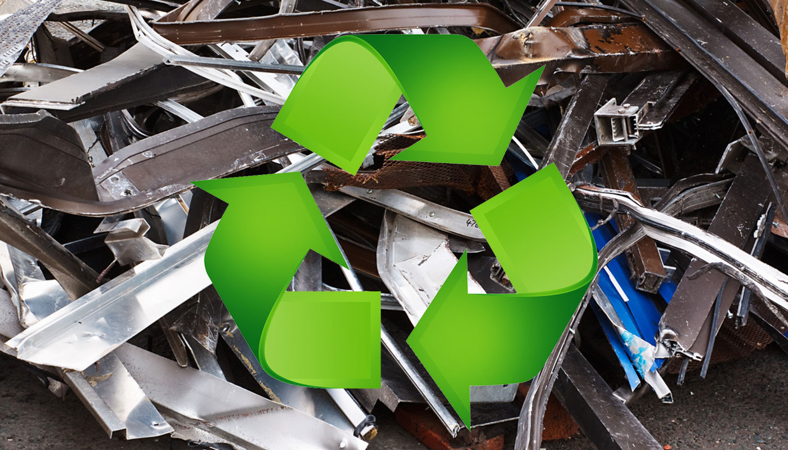
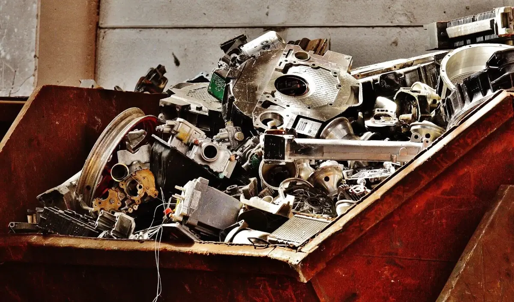

What to do with: Metal

For the most part, metal can be recycled, but there some
exceptions where it should be in the garbage. The following guidelines apply to the City of Kirkland and should
apply broadly to other cities as well.
Metal Cans
Aluminum and tin cans are recyclable, but only recycle metal
lids that are larger than three inches.
Scap Metal
Scrap metal needs to fit specific dimensions to be recycled.
Scrap metal put in your blue recycling bin should be larger than three inches, but no longer than 2 feet. If your
metal is too large, find a local scrap mill or US designated transfer station for the metal. For more specific
guidelines, see the following page:
Metal Guidelines

Foil and pie trays
Tin foil / aluminum foil and pie trays are NOT recyclable in
Kirkland, although they are recyclable in some larger cities like Seattle, so be sure to check local guidelines.
Furthermore, thin food wrappers with a shiny/aluminium apperance should typically be thrown away.
Outside Kirkland?
If you live in a city other than Kirkland, these guidelines
should still mostly apply (with the exception of tin foil and pie trays, which can be recyclable elsewhere).